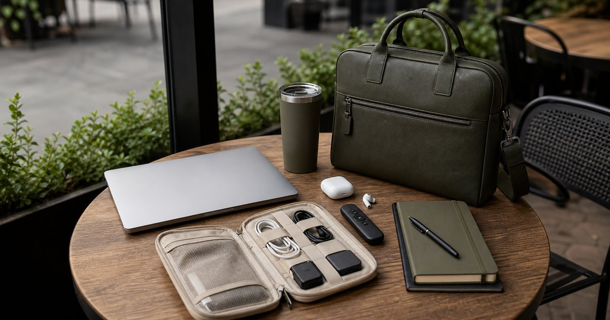

Elite Fashion｜顧問與講師的遠距工作包：充電、耳機、簡報與移動收納
遠距工作包不該只是裝得多，而是讓會議、簡報、充電與收納都能穩定運作。整理顧問與講師的工作包配置。

遠距工作包要先照顧會議不中斷
顧問與講師的工作包不是越滿越好。真正需要先整理的不是商品名稱，而是你每天會在哪一個動作卡住：開會、比對資料、拍攝、簡報、移動，或收納。把卡住的位置說清楚，設備選擇才不會變成看到規格就心動。
Momax、DTAudio、REAICE、LamiFans、華克電腦、曜暘音響與 UD LAB 可以放在這個情境裡比較，但角色要分清楚。編輯部會先看它們各自負責的任務：主機、螢幕、充電、聲音、拍攝、保護或收納，而不是把所有 3C 周邊混成一張清單。
先確保充電、聲音、轉接和檔案備援。常見錯誤是只看包款外觀，忽略會議現場最常出錯的配件；在台灣常見的小宅書桌、共享辦公室、咖啡店與客戶會議場景裡，咖啡店、共享辦公室和客戶會議室都需要快速展開的流程，這些細節往往比買到更高一階規格更影響使用感。
- 先確認每天使用頻率，再決定預算順序。
- 先排除會造成麻煩的動線，再補功能型配件。
充電配置要分成手機、筆電與備援
遠距工作最怕電量焦慮。真正需要先整理的不是商品名稱，而是你每天會在哪一個動作卡住：開會、比對資料、拍攝、簡報、移動，或收納。把卡住的位置說清楚，設備選擇才不會變成看到規格就心動。
Momax 可以作為充電與線材主線 可以放在這個情境裡比較，但角色要分清楚。編輯部會先看它們各自負責的任務：主機、螢幕、充電、聲音、拍攝、保護或收納，而不是把所有 3C 周邊混成一張清單。
先列出手機、筆電、耳機各自需要的線和輸出。常見錯誤是只帶一條萬用線，現場才發現筆電不能用；在台灣常見的小宅書桌、共享辦公室、咖啡店與客戶會議場景裡，半天行程至少要能支援會議延長和臨時移動，這些細節往往比買到更高一階規格更影響使用感。
- 先確認每天使用頻率，再決定預算順序。
- 先排除會造成麻煩的動線，再補功能型配件。
耳機與收音是線上專業感的一半
別人最先感受到的是聲音穩不穩。真正需要先整理的不是商品名稱，而是你每天會在哪一個動作卡住：開會、比對資料、拍攝、簡報、移動，或收納。把卡住的位置說清楚，設備選擇才不會變成看到規格就心動。
DTAudio 與曜暘音響可以放在音訊設備比較 可以放在這個情境裡比較，但角色要分清楚。編輯部會先看它們各自負責的任務：主機、螢幕、充電、聲音、拍攝、保護或收納，而不是把所有 3C 周邊混成一張清單。
先看配戴時間、收音位置與備援方案。常見錯誤是所有會議都押在單一藍牙耳機上；在台灣常見的小宅書桌、共享辦公室、咖啡店與客戶會議場景裡，長時間講課或顧問會議更需要舒適度和備用耳機，這些細節往往比買到更高一階規格更影響使用感。
- 先確認每天使用頻率，再決定預算順序。
- 先排除會造成麻煩的動線，再補功能型配件。
簡報現場最常出問題的是轉接與檔案備份
簡報內容準備好，不代表設備能順利接上。真正需要先整理的不是商品名稱，而是你每天會在哪一個動作卡住：開會、比對資料、拍攝、簡報、移動，或收納。把卡住的位置說清楚，設備選擇才不會變成看到規格就心動。
REAICE、Momax、日本橋 3C 與聯威電腦可補轉接與周邊 可以放在這個情境裡比較，但角色要分清楚。編輯部會先看它們各自負責的任務：主機、螢幕、充電、聲音、拍攝、保護或收納，而不是把所有 3C 周邊混成一張清單。
先問投影接口，再準備雲端、本機與離線版本。常見錯誤是只帶雲端檔案，現場網路一差就卡住；在台灣常見的小宅書桌、共享辦公室、咖啡店與客戶會議場景裡，客戶場地的投影和螢幕比例不可預設都和自己辦公室一樣，這些細節往往比買到更高一階規格更影響使用感。
- 先確認每天使用頻率，再決定預算順序。
- 先排除會造成麻煩的動線，再補功能型配件。
收納包款要服務流程，不只是好看
包內物品要能快速找到。真正需要先整理的不是商品名稱，而是你每天會在哪一個動作卡住：開會、比對資料、拍攝、簡報、移動，或收納。把卡住的位置說清楚，設備選擇才不會變成看到規格就心動。
UD LAB 可作為移動收納補充，LamiFans 可放在物品標示和禮贈脈絡 可以放在這個情境裡比較，但角色要分清楚。編輯部會先看它們各自負責的任務：主機、螢幕、充電、聲音、拍攝、保護或收納，而不是把所有 3C 周邊混成一張清單。
用小包分成充電、音訊、文件與個人用品。常見錯誤是每次開會前都把整包倒出來找轉接器；在台灣常見的小宅書桌、共享辦公室、咖啡店與客戶會議場景裡，換包或出差時，固定分層比單一大口袋更不容易漏帶，這些細節往往比買到更高一階規格更影響使用感。
- 先確認每天使用頻率，再決定預算順序。
- 先排除會造成麻煩的動線，再補功能型配件。
一份穩定工作包，應該能支援半天突發行程
臨時延長、換場地與設備不合都很常見。真正需要先整理的不是商品名稱，而是你每天會在哪一個動作卡住：開會、比對資料、拍攝、簡報、移動，或收納。把卡住的位置說清楚，設備選擇才不會變成看到規格就心動。
Momax、DTAudio 和 REAICE 是工作包底層三件事 可以放在這個情境裡比較，但角色要分清楚。編輯部會先看它們各自負責的任務：主機、螢幕、充電、聲音、拍攝、保護或收納，而不是把所有 3C 周邊混成一張清單。
每週檢查電量、線材與備份檔案。常見錯誤是包內東西越來越多，卻沒有定期淘汰；在台灣常見的小宅書桌、共享辦公室、咖啡店與客戶會議場景裡，真正的專業感是任何場地都能穩穩開始，而不是配件展示，這些細節往往比買到更高一階規格更影響使用感。
- 先確認每天使用頻率，再決定預算順序。
- 先排除會造成麻煩的動線，再補功能型配件。
FAQ
這類設備需要一次買齊嗎？
不建議。先找出目前流程中最常卡住的地方，再補一到兩件會每天使用的配件。一次買齊容易買到重複或不適合自己動線的設備。
商品規格應該怎麼比較？
先確認自己的使用情境，再看尺寸、重量、連接方式、供電、收納與保固。不要只看單一規格或宣傳字眼，仍應以商品頁標示為準。
如果預算有限，應該先買哪一類？
先買能降低日常摩擦的項目，例如穩定支架、必要充電、清楚收音或資料備份。美化型或偶爾使用的周邊可以放到第二輪。
下一步建議
如果你想把工作與創作流程整理得更穩，可以先挑最常卡住的一段動線開始補配件。
重要警語
本文為一般 3C 周邊、工作設備與創作者配件選購情境整理，不構成效能測試、成果保證、設備相容性或維修承諾。規格、保固、價格、活動與庫存請以商品頁公告為準。
本文含品牌／商品導購連結；若你透過部分商品連結前往選購，Elite Fashion 可能取得合作收益。本文仍以編輯判斷與使用情境整理為主，價格、規格、活動與庫存請以商品頁公告為準。